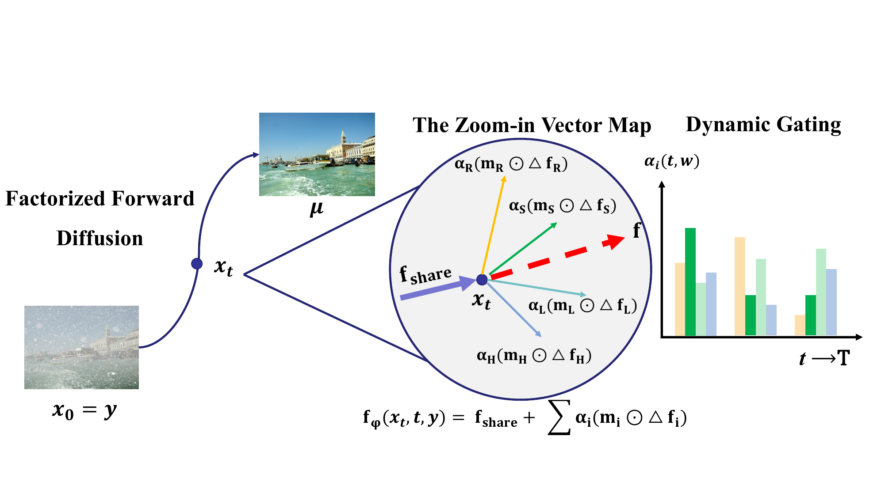

Factorized Stochastic Transport for Composite Degradation Image Restoration
1Fuzhou University
2Quanzhou Inst. of Equipment Mfg., Haixi Institutes, CAS
3FJIRSM, CAS
4Fujian College, UCAS
5FAFU
6FJNU
*Corresponding author
Pattern Recognition (Under Review)
Failure Mode Analysis. Two failure modes of existing all-in-one restoration on composite degradations are identified: velocity averaging and under-specialized routing.
Factorized Velocity Field. A spatially gated mixture-of-experts decomposes the restoration flow into shared and degradation-specific components.
Single-Step Inference. State-dependent multiplicative noise admits closed-form log-normal transitions for feed-forward-speed sampling.
State-of-the-Art Quality. Best structural and perceptual quality on CDD-11 with 10.3× expert selectivity.

Figure 1. Conceptual overview of F2D-Net. Left: stochastic transport trajectory from degraded input toward clean target via log-normal transitions. Center: the flow field is factorized into a shared backbone component and four expert increments weighted by spatial gating maps and temporal coefficients. Right: dynamic gating evolves over time, allocating different expert contributions at different stages.
F2D-Net formulates image restoration as a forward-only stochastic transport process. The key insight is to use state-dependent multiplicative noise: when the current estimate is far from the clean target, larger uncertainty helps account for restoration ambiguity; as the estimate converges, the noise contracts, preserving precision.
This SDE admits a closed-form log-normal solution, enabling both efficient training via direct sampling of intermediate states and single-step inference via analytic transition kernels.
The restoration velocity field is factorized into a shared backbone and degradation-specific expert increments:
where αi are time-conditioned gating weights, mi are spatial intensity maps, and Δfi are lightweight expert adapters with varying dilation rates.
| Method | Single PSNR | Pairwise PSNR | Triple PSNR | Avg PSNR | Avg SSIM |
|---|---|---|---|---|---|
| AirNet | 25.60 | 22.97 | 22.02 | 23.75 | 0.814 |
| PromptIR | 28.88 | 24.46 | 23.54 | 25.90 | 0.850 |
| OneRestore | 31.68 | 27.35 | 24.84 | 28.47 | 0.878 |
| MoCE-IR | 32.54 | 27.73 | 25.40 | 29.05 | 0.881 |
| F2D-Net | 32.08 | 27.72 | 25.18 | 28.72 | 0.884 |
| Method | Dehaze (SOTS) | Derain (Rain100L) | Denoise σ=15 | Denoise σ=25 | Denoise σ=50 |
|---|---|---|---|---|---|
| PromptIR | 30.58 | 36.37 | 33.98 | 31.31 | 28.06 |
| MoCE-IR | 31.34 | 38.57 | 34.11 | 31.45 | 28.18 |
| F2D-Net | 31.40 | 37.62 | 34.48 | 31.74 | 28.35 |
| Method | Params | Dehaze | Derain | Denoise | Deblur | Low-light | Avg PSNR |
|---|---|---|---|---|---|---|---|
| PromptIR | 36M | 29.85 | 36.92 | 31.28 | 29.52 | 22.15 | 29.94 |
| MoCE-IR | 25M | 30.48 | 38.04 | 31.34 | 30.05 | 23.00 | 30.58 |
| F2D-Net | 23.8M | 30.35 | 38.42 | 31.48 | 29.87 | 23.32 | 30.69 |
| Method | Avg LPIPS ↓ | Avg DISTS ↓ | FID ↓ | NIQE ↓ | MUSIQ ↑ | CLIP-IQA ↑ |
|---|---|---|---|---|---|---|
| OneRestore | 0.115 | 0.096 | 45.2 | 4.68 | 66.8 | 0.592 |
| MoCE-IR | 0.108 | 0.089 | 38.8 | 4.28 | 67.5 | 0.605 |
| F2D-Net | 0.096 | 0.079 | 27.2 | 3.92 | 71.4 | 0.638 |
@article{su2025f2dnet,
title={Factorized Stochastic Transport for Composite
Degradation Image Restoration},
author={Su, Xin and Chao, Jianshu and Shen, Huifang
and Chen, Anqi and Gao, Yuting},
journal={Pattern Recognition},
year={2025}
}